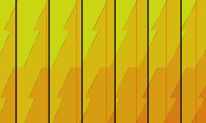

Haste Visualizer
Marginal SP Haste Equiv
Welcome!
This is a tool to give a visual representation to haste. The idea is to help explain how haste works and what
factors into the value of haste, not give definitive gear decisions.
General tips for using this tool:
- This is best used for casters
- If you move your feet, the timeline resets to 0.
- If you cast an instant spell, you gain no time and could subtract 1.5 sec from max fight time.
- If you cast a spell equal to 1.5 sec (keeping Scorch up), you potentially will be gaining no time depending on gear haste and spell latency.
Haste on DPS Sims
Sims assume 100% uptime, but when you move for mechanics, the fight length (as far as haste is concerned) goes back to zero. Long fights should be simmed in segments; Patchwerk is the longest "stand-still and cast" fight for most people.
Why does haste still have high value on trash?
One extra spell cast on a short trash pack where you get 3 casts off instead of 2 is a huge percent increase in DPS, whereas getting a 22nd cast off instead of 21, although more likely or guaranteed to occur, is less meaningful. This is why you will see sims value small amounts of haste highly even on short fight lengths. It really depends on the fight length.The value haste provides is very RNG-heavy on trash, based on kill time, while it normalizes on longer fights.
MQG and on-use Haste items
Haste items can create areas where haste has increased value because cast time is calculated at the start of the cast and doesn’t modify mid-cast with haste items. Using MQG or a Juju Flurry after the start of your cast time effectively wastes buff time until the next cast begins. You can take advantage of this by hitting haste thresholds that allow a cast to begin just before the buff wears off. This little bit of haste that puts you over this threshold has insane marginal value and equates to a big bonus to extra casts. You can see these in the graph as little shelves where that 1% haste gives an unexpected bonus. Kiss and other haste items work the same, but it’s most evident with the massive increase from MQG.
Spell Cast Latency (& why you need Nampower)
AKA spell queuing latency/input lag, it's the amount of time after a cast finishes that it takes the server to
recognize the completion and let you begin casting a new spell.
The actual time it takes to go from the beginning of one cast to the next is the spell's base cast time
plus your spell cast latency.
This number will be lower in EU and higher in NA, but is never 0. You can find your spell latency by either
using an addon like CastTimer or less
reliably by looking at
logs for a stand-and-cast fight like Patchwerk.
Note: this is NOT the same as server latency or ping.
You can learn more about this in the readme of Nampower.
Nampower aims to reduce spell queuing latency — it can be the difference between 80ms and 20ms in NA.
Why This Visualization Isn't for Melee
It's nice to understand the scaling of haste but it's impossible to accurately predict swing times like cast
times because of Windfury totem. Windfury is, in a way, a haste totem.
It completes your swing timer, providing some amount of haste dependent on gameplay
that can’t be calculated easily. On top of that, Flurry can be inconsistent.
You will never have clean predictable hasted cast times like a caster will.
Healers and haste
Healers can use this visualization too, but the value will be lower than stated for healers for the following reasons:
- Healers cast a lot of instant cast spells, which don’t benefit from haste.
- Healers cancel cast a lot, which is downtime and hurts haste value.
- healers don’t necessarily have the same time constraint as DPS, you can continue healing after the mob dies.
What causes less haste to give more casts?
 Sometimes the graph will show something like this above. This is the result of popping a haste cd at a set fight time instead of with a cast/swing timer. Chastise will be unpredictable, but other cd's like juju flurry, mqg, etc can be best used right before a new swing/cast begins.
Beta
This is not a finished product! Stuff is not perfect, and many sources of haste are missing. This is not a sim and simply gives an "on average" answer. The biggest bugs are listed below:
- Spell Dmg assumes no resist and 100% hit. avg spell dmg will be lower in practice.
- More spells needed.
- Uses average instead of completed casts to allow for variable fight lengths.
- Spell cast latency needs to auto set to 0 for Swing mode.
- Missing all sources of Proc-based haste
- Crit multiplier for heals and talents is not included; everything is x1.5.
- Allow variable haste to begin at the start of the cast, as if macro’d.
- More sources of variable haste (Berserking, etc.).
- Not optimized, runs very slow if you make the graph large with many cast time events.